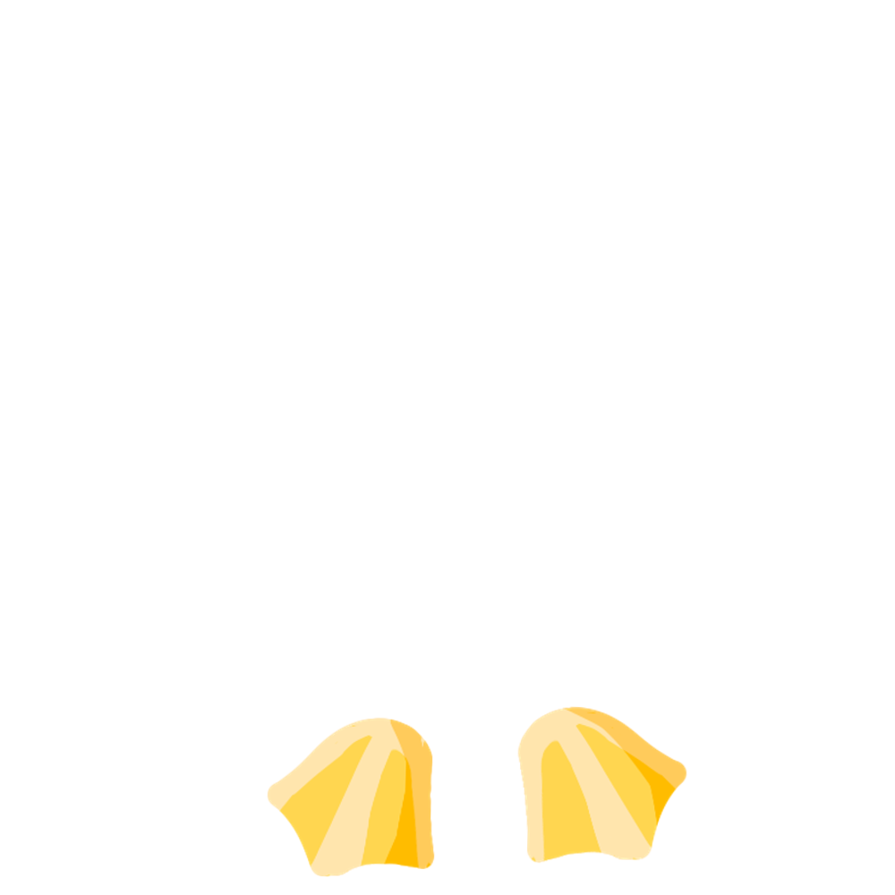
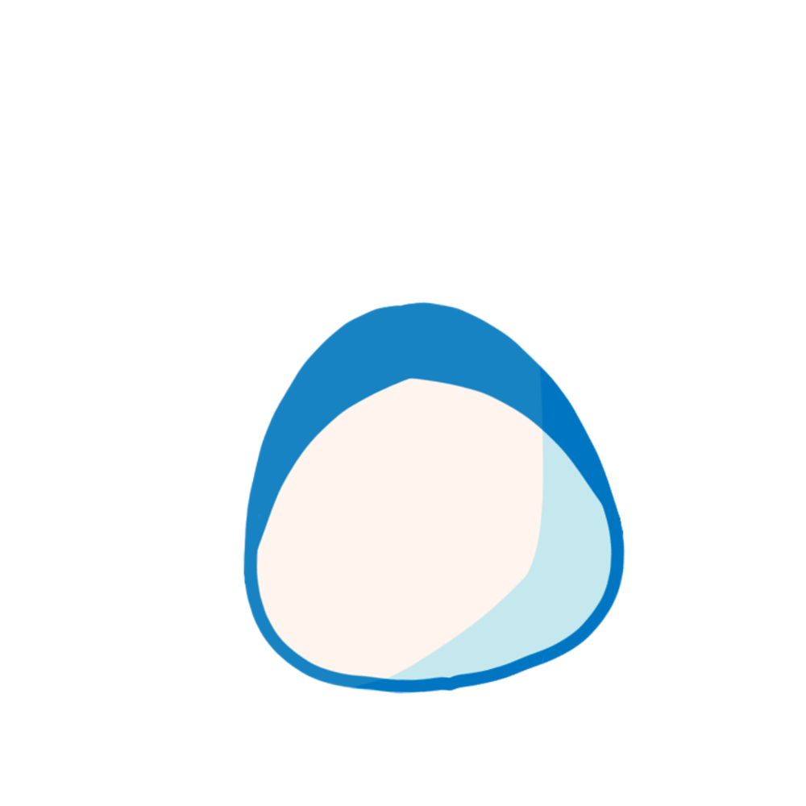
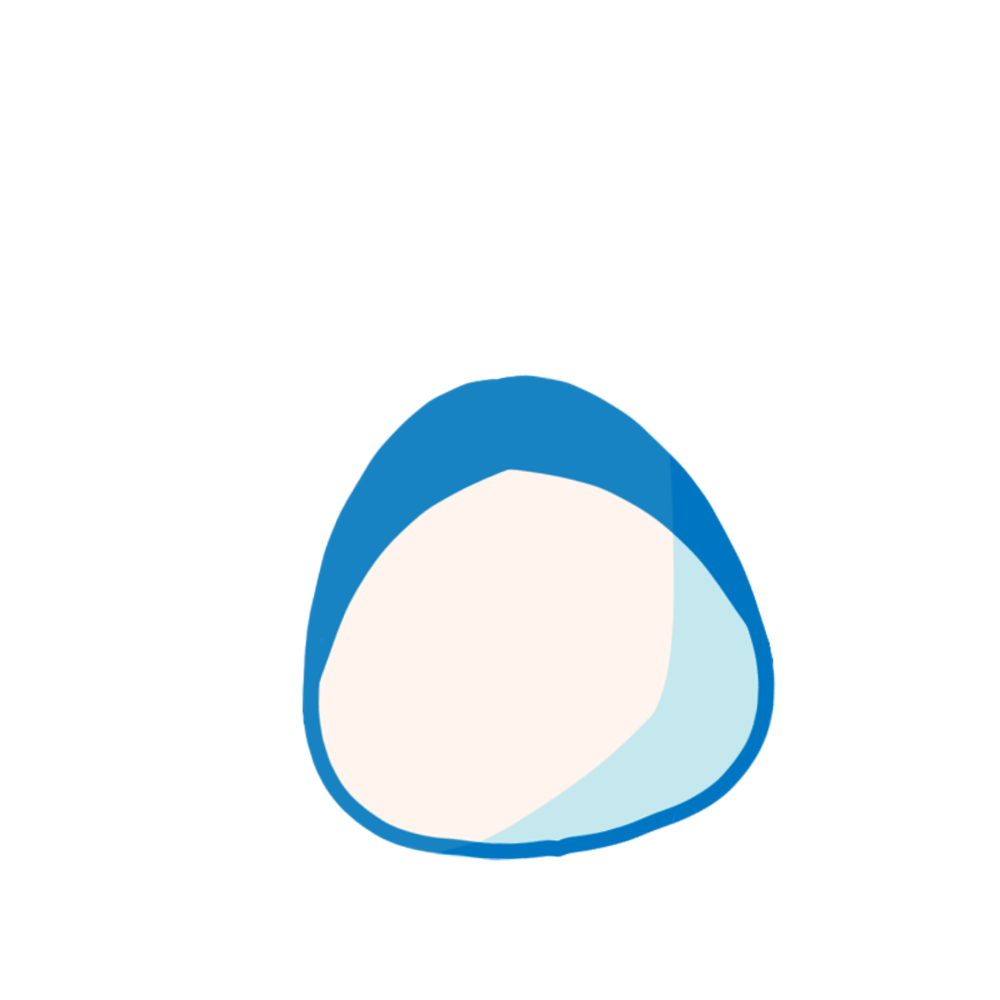
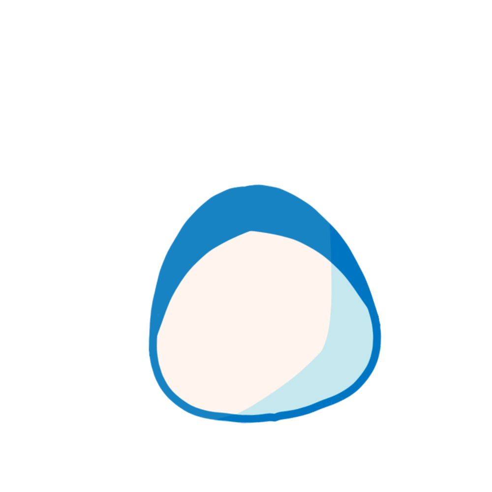

 



🥠Change Wada's Animation!

💖About Me!
I'm Ianna! My favorite color is yellow and blue. And, drumroll please... 🥠my favorite subjects are now updated! It's currently: CS, Math, STATTTT, and Chem. 😠I'm from 9-Potassium, and I'm K30! My favorite animal is either a penguin 🐧, an otter 🦦, or a panda 🐼.